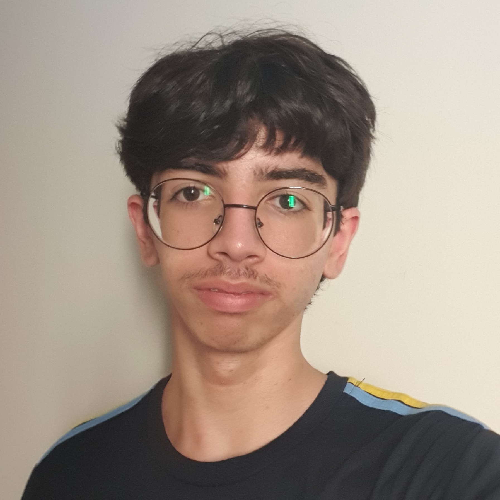

Perfil
Dados Pessoais
Nome Completo: Gabriel Henrique Lacerda de Mello
Data de Nascimento: 20 de Abr. de 2009
Localização: Guarulhos, SP, Brasil
E-mail: gabrielmellocode@email.com
Telefone: (11) 91192-1772
Sobre Mim
Eu sou um apaixonado por tecnologia e linguística. Desde pequeno, fui fascinado pela arte da programação — . Cresci desmontando computadores velhos do meu pai e tentando fazê-los funcionar de novo, o que me levou a uma carreira que mistura programação, design e um toque de criatividade.
Fora do mundo digital, gosto de ler livros de ficção científica (George Orwell é meu favorito), aprender sobre idiomas em noites tranquilas e explorar feiras em busca de relíquias tecnológicas (videogames). Meu sonho é construir um computador funcional dos anos 70 do zero, usando apenas componentes da época. Enquanto isso, trabalho em projetos do colégio.
Minha filosofia de vida é simples: "Aprenda com o ontem, viva o hoje, construa o amanhã." Acredito que o conhecimento é uma ponte entre eras, e tento trazer isso para tudo o que faço. Eu coloco paixão em cada detalhe.